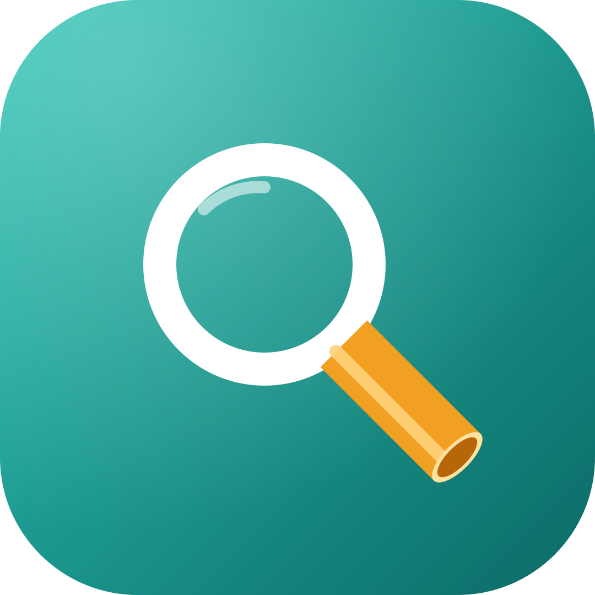

Privacy search engine
NudelSearch
My own public search engine based on SearXNG, deployed for privacy and security reasons.
Task
With this small project I deployed my own search engine based on SearXNG.
Functionality
NudelSearch is currently hosted in the cloud; I plan to move it to my Raspberry Pi once my DS-Lite internet connection allows it. Its results are not quite on par with Google, but it offers full privacy. It combines results from many engines on the web: SearXNG forwards your queries to them without passing on any information about you that they could sell.